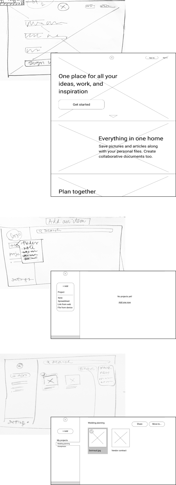

Wedding planning is a team effort that requires more than just expert advice. Gather provides all the tools that couples need to plan their wedding together.
ROLE
UX / UI Designer
DELIVERABLES
user research, user testing, sketching, wireframes, branding, visual design, prototyping
TOOLS
Figma, UsabilityHub
PROBLEM
Wedding websites today help users with research, not planning. They lack the robust tools couples need to organize their event, don’t allow for collaboration and have hyper-traditional branding.
SOLUTION
Gather brings modern couples’ favorite planning tools into one space where both partners will want to spend time planning together.
COMPETITIVE ANALYSIS
Wedding websites today help users with research, not planning. They lack the robust tools couples need to organize their event, don’t allow for collaboration and have hyper-traditional branding.
SOLUTION
Some of the bigger players in the wedding space, such as The Knot and Wedding Wire, are focused on blog content, vendor reviews or selling goods. While many do offer basic planning tools, such as wedding checklists, budgeting tools, and guest list managers, these tools aren’t collaborative. Need to plan something outside of these specific use cases? You can’t.
USER PERSONAS
63%
of people surveyed use more than one tool in parallel to plan wedding and wedding-related projects, such as honeymoons, showers, and bachelorette parties. The most popular tools used to plan these projects are Google Drive and Pinterest.
PERSONAS
Jessica (29) and David (32) are planning their wedding, tech savvy and use cloud productivity tools regularly.

USER STORIES
We prioritized user stories around the popular planning actions:
- I want to save a website or article for later
- I want to create a document
- I want to organize my items into categories
- I want to create a spreadsheet
- I want to share items with other people

WIREFRAMES
Sketches (and then wireframes) were created for all screens needed to complete our prioritized user stories. These initial desktop screens allowed users to first create a project, such as “Wedding, “Bridal Shower” or “Honeymoon”. Within each project, the user could create spreadsheets and documents, upload files, or save links from the web.
USER TESTING
To test these wireframes, we asked participants to complete the following tasks:
- Add an item
- Organize an item
- hare and item
We discovered that the project-based workflow made completing these tasks unintuitive. In addition, because our language was so generic, users did not immediately see the differentiation between Gather and existing products like Google Drive.
To address these concerns, we removed the project creation step from the workflow and focused all language on wedding planning specifically.
BRANDING
Modern, timeless and gender-neutral were guiding principles for our branding.

-
HEADER 1
Playfair Display, 24pt
-
Header 2
Poppins, 13pt
-
Body
Poppins, 13pt
-
Body Link
Poppins, 13pt
MOCKUPS
We applied our branding work and wireframe feedback to high fidelity mockups:

PROTOTYPE
We made additional design adjustments based on preference tests and created a high fidelity prototype for a second round of user testing. Participants were asked to complete the following tasks:
- Add an item
- Organize an item
- Share an item
With the wedding planning focus, this prototype tested much better with users. All participants breezed through the tasks and ranked them easy to complete.
For our final product, we addressed feedback on some minor elements that still needed work, such as reorganizing the folder list in the dashboard view:

CLOSING THOUGHTS
We started this project by attempting to create a catch-all project planning product. However, by focusing the use case for wedding planning only, we were able to deliver a tighter product that is more intuitive to use.
In a space as crowded as the wedding industry, wedding planning is still a disorganized and gendered experience with few websites stepping up to solve the problem. Gather meets the need for a single destination where modern couples have all the tools to plan their wedding together.